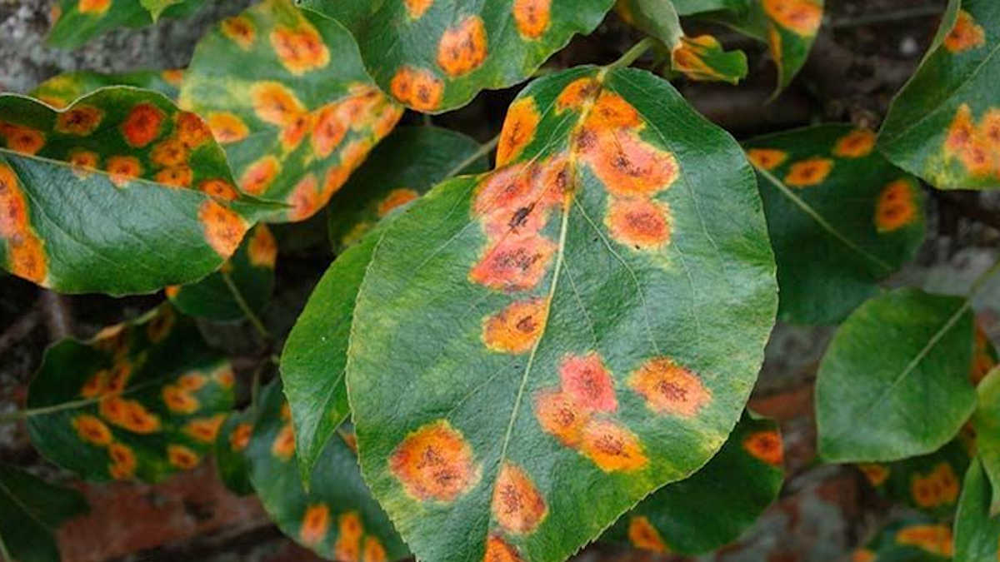
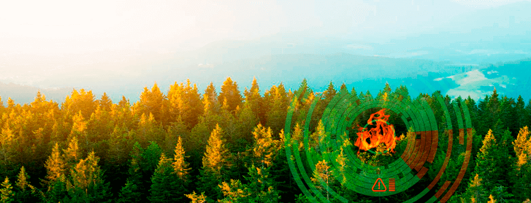

Заболевания-С заболеваниями, вызванными развитием патогенных грибов, борятся при помощи фунгицидов: регулярно проводят опрыскивания, в том числе, и для профилактики. Чтобы избежать привыкания штаммов грибов, препараты следует менять.
С заболеваниями, вызванными нехваткой питательных веществ, борятся восполнением их, т.е. внесением соответствующих удобрений. Бороться с бактериальными и вирусными заболеваниями помогут только профилактические меры. Для борьбы с вредителями применяют инсектициды, ручную сборку насекомых.

Наиболее традиционный метод обнаружения пожаров – это визуальное обнаружение людьми со специализированных конструкций – вышек. Настоящий метод используется более ста лет с небольшими усовершенствованиями, связанными с использованием средств связи (рации, сотовая связь и др.) и оптическими устройствами визуального контроля (бинокли, подзорные трубы и др.).
В идеальном варианте обнаружение пожара происходит следующим образом: на специализированной вышке (предназначенной для продолжительного нахождения на ней человека) на специальной площадке находится человек.
ПЛОЩАДКА-
Дополнительно на площадку наносят азимутальный круг для определения направления. При визуальном обнаружении пожара наблюдатель с помощью азимутального круга определяет направление на пожар, и сообщает это направление в центр контроля с помощью средств связи. Из центра контроля определяют, с какой ещё вышки может быть обнаружен этот пожар и связываются с другим наблюдателем, который так же обнаруживает пожар и определяет направление на него. После чего в центре контроля, используя известные направления с вышек на пожар, определяют местонахождение предполагаемого пожара и предпринимают меры для его ликвидации.
Не стоит забывать и о немаловажном способе обнаружения пожара при помощи местного населения, что при настоящем развитии мобильной связи достаточно часто может быть эффективно.

Осмотр-Осмотр леса рекомендуется начинать наблюдением за его опушкой издали. Признаками наличия противника в лесу могут быть: взлет и крики птиц; следы колес и гусениц боевых машин, ведущие в лес или из леса; поломанные ветки и ободранная кора на деревьях, дым костров и полевых кухонь; шум моторов, движение на опушке леса, блеск стекол, металлических частей машин и боевой техники. Если противник на опушке леса (рощи) не обнаружен, дозорные выдвижутся к опушке. Небольшую рощу осматривают, проходя по ее опушке и в глубине. Большой, но редкий лес (участок леса) просматривается цепью пеших дозорных и машин. В лесу дозорные передвижутся, не теряя из виду друг друга. Деревья на опушке и в глубине леса следует внимательно осматривать снизу вверх с целью выявления наблюдателей и снайперов противника. Удаление дозорных друг от друга и от ядра разведывательного органа в лесу сокращается. Боевые машины продвижутся вдоль дороги по ее краю, а если возможно, то лесом и по просекам. Тщательному осмотру подвергаются не только опушки, вершины деревьев, но и густые заросли, завалы, входы и выходы в узких местах (мосты, гати, овраги, долины) и другие места, удобные для расположения засад противника. Обнаруженные препятствия и заграждения разведчики обозначают указками или засечками на деревьях, отыскивают и показывают пути обхода. Завалы в первую очередь необходимо разведать на наличие мин. При действиях на боевых машинах завал можно растащить, цепляя тросом за вершины или комли деревьев.
Идея -
я хочу создать робота который вместо людей будет наблюдать за лесом и за стрельбой в запретной зоне
У него будут датчики, камеры и инфракрасные датчики
Робот —это автоматическое устройство, предназначенное для осуществления различного рода механических операций,
которое действует по заранее заложенной программе. Робот обычно получает информацию о состоянии окружающего пространства посредством датчиков.
 СПОМОЩЬЮ НИХ МЫ МОЖЕМ НЕ ЗАДАЧИТЬ СЕБЯ СЛОЖНОЙ РАБОТОЙ
СПОМОЩЬЮ НИХ МЫ МОЖЕМ НЕ ЗАДАЧИТЬ СЕБЯ СЛОЖНОЙ РАБОТОЙ
Спасибо за внимание
Прошлое системы
W.W.F
Настоящее системы
люди которые осматривают лес
Будущее системы
мобильная система
Прошлое надсистемы
наблюдение леса
Будущее надсистемы
роботоосмотр
настоящие надсистемы
мониторинг леса
Прошлое подсистемы
волонтёры
Настоящее подсистемы
рации,вышки, бенокли
Будущее подсистемы
камерыбдатчики
Спасибо за внимание